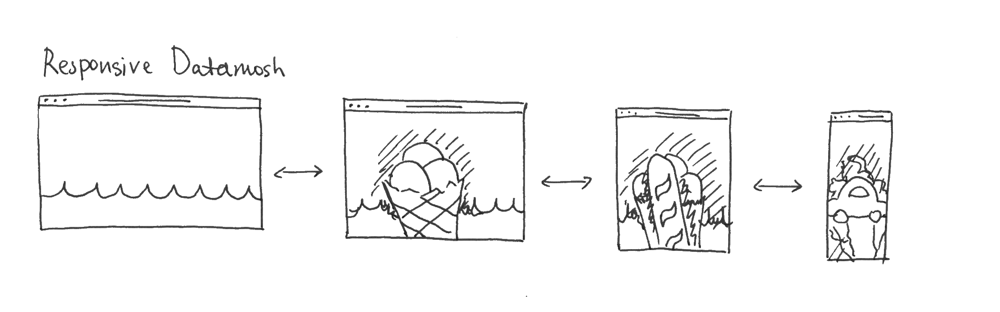
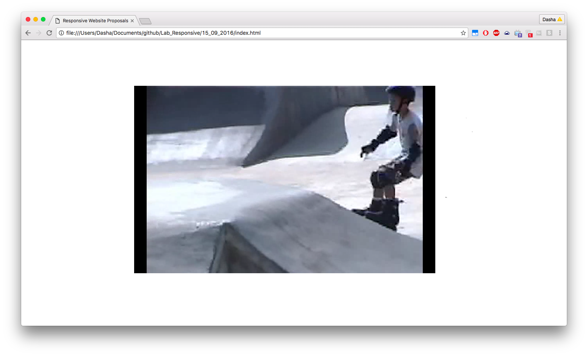
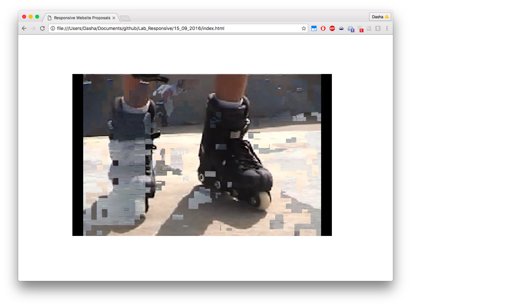
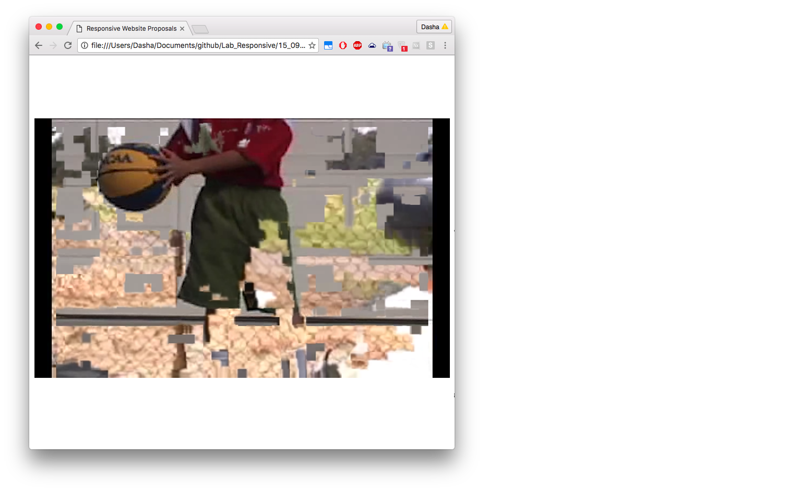

5. Responsive Datamosh

Responsive Datamosh is an interactive responsive webpage that starts out with
a regular video that gets datamoshed with new videos as you resize the window.
When one gets to the point where one can no longer resize the window, the
original video is almost no longer visible, as it has been overwritten by
many other excerpts.


